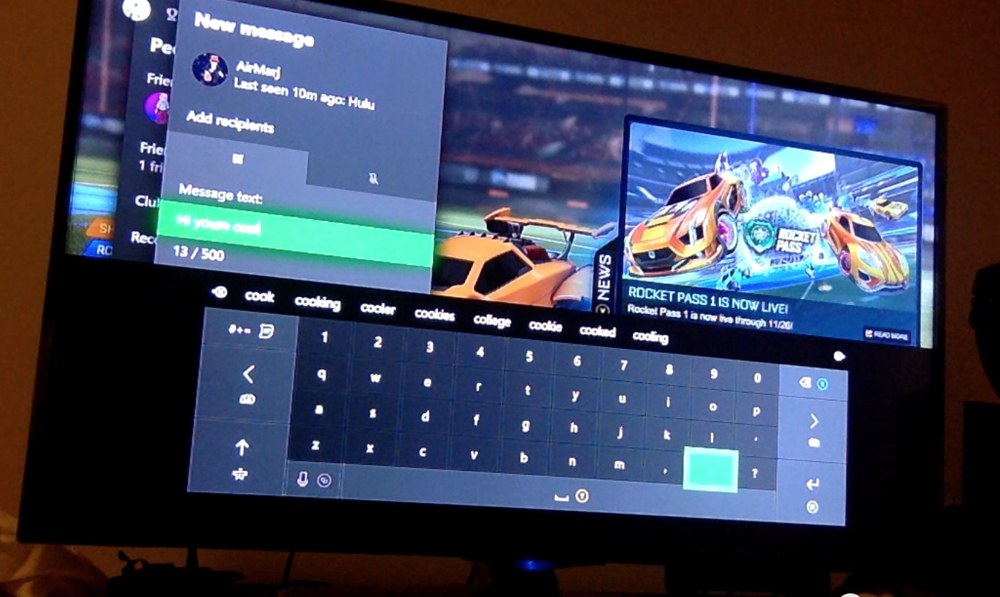

Publications
-
In Press: Edward F. Melcer and Marjorie Ann M. Cuerdo. (2020). “Death & Rebirth in Platformer Games”. In Game User Experience and Player-Centered Design. Springer.
Academic Research
"Death & Rebirth: A Taxonomy for Platformer Games"

Through Alternative Learning Technologies and Games Lab at University of California, Santa Cruz advised by Edward Melcer.
(4/2019) Abstract. Failure is a central aspect of almost every game experience, driving player perceptions of difficulty and impacting core game user experience concepts such as flow. At the heart of failure in many game genres is player death. While techniques such as dynamic difficulty adjustment have addressed tweaking game parameters to control the frequency of player death occurrence, there is a surprisingly limited amount of research examining how games handle what happens when a player actually dies. We posit that this is a rich, underexplored space with significant implications for player experience and related techniques such as dynamic difficulty adjustment. This chapter presents our exploration into the space of player death and rebirth through the creation of a generalized taxonomy of death in platformer games---one of the genres that features player death and respawning most heavily. In order to create this taxonomy, we collected and catalogued examples of respawning mechanics from 62 recent platformer games released on the digital distribution platform Steam after January 2018. Games selected varied equally across positive, mixed, and negative overall reviews in order to provide a broader range of mechanics, both good and bad. We observed gameplays of each individual game and noted the processes of death and rebirth respectively. A grounded theory approach was then employed to develop the taxonomy of game death and respawning, resulting in five notable dimensions: 1) death conditions, 2) respawn locations, 3) changes to player progress, 4) obstacles, and 5) aesthetics. Finally, we argue how the different dimensions and mechanics highlighted in our taxonomy have substantial implications for key aspects of player experience such as flow and enjoyment, and discuss how they could be used to improve the effectiveness of related techniques such as dynamic difficulty adjustment.
"Evolving Child-Computer Interaction: Mobile-based Interaction Design and User Testing"
Through HCI at DePaul University advised by Cynthia Putnam.
(06/2019) While it is highly likely that children under the age of 12 have used a mobile device in the U.S., there is a paucity of information to guide interaction designers and usability experts about how to design and test their mobile apps with children. In this work (currently a pilot study), I have conducted user testing of mobile-based apps aimed at computational thinking with two different age groups (7-8 and 9-11). The pilot study will lay a foundation for an envisioned larger project that will result in developmental-focused interaction design guidelines for mobile apps; future work will include creating and testing the efficacy of a tool for designers to access the guideline libraries. This study also contributes to the knowledgebase of user testing with children; specifically, we are working to modify and adapt the System Usablity Scale (SUS) for these two groups.
User Experience (UX)
Research: Ghostbusters (2016)
(5/2019) My Games User Research (GUR) group project conducted GUR methods for the game Ghostbusters (2016). We utilized DePaul's Software Observation and Usability Laboratory (SOUL) to do the studies. We conducted a competitive review, heuristic evaluation, usability test, and playtest.
Research: DePaul Senior Capstone Games

(5/2019) My GUR class paired up with senior undergrad Game Development capstone groups to evaluate early builds of their game projects. One was a PC game that uses a mouse ("Tethered") and the other was a game that uses an Xbox controller ("Captain's Hold"). We conducted usability testing and added some playtest-type questions for the latter.
Research: Music for Stories

(3/2019) My UX Research Methods group project was about the process content creators go through to add music and additional auditory material to add to their material. We conducted observations, interviews, and surveys throughout this term-long project. This is the final report containing details about each stage of the process and our implications for design.
Includes: study protocols, statistical survey results, personas and scenariosDesign & Research: CollegePro

(11/2018) CollegePro was an Interaction Design group project. We conducted surveys for students to provide insight in wireframing, prototyping, and designing a website, CollegePro, that aims to centralize information resources regarding academic advising, career, and research in a personalized way and allows students to communicate with others.
Prototype Link: InVision Prototype
Research: Xbox Live Messaging Feature
(9/2018) My first go at usability evaluation for an existing system. I examined users of the Xbox Live (messaging system) and performed a heuristic analysis, cognitive walkthrough, and usability testing using video recording and note taking.
Research: Coffee Shop Observation

(1/2019) My first go at non-participant observation. I observed a local coffee shop and their process for handling orders. I used affinity diagramming to analyze my time-stamped field notes and created a sequence model of the overall process.
Includes: time-stamped field notes, AEIOU analysis, affinity diagramming, sequence model
Development
Mobile Dev: SoundCHK
(5/2017) Inspired by the rise of augmented reality (AR), my undergrad group capstone project was SounDCHK, a multimedia digital magazine app that implemented a QR Code Reader that accompanied a physical zine (which was also designed and published by my group). I did the wireframing, designing, and development of the mobile application.
Personal Website (this)
This website was designed and coded by me. It will be a lifelong ongoing project as my career progresses. ☺ My goal is to include search and filter features for the Projects and Blog sections and continuously improve on the design.